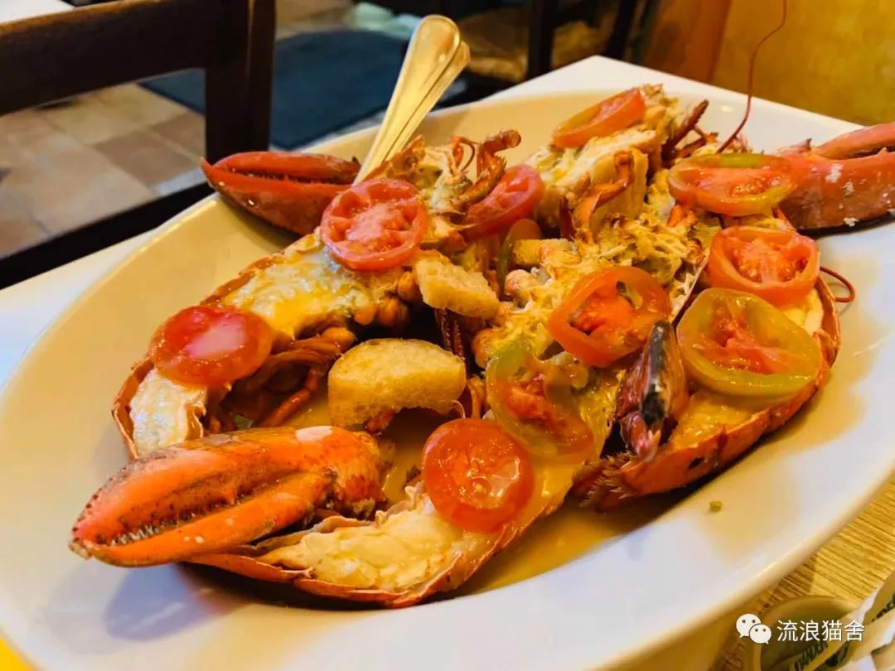
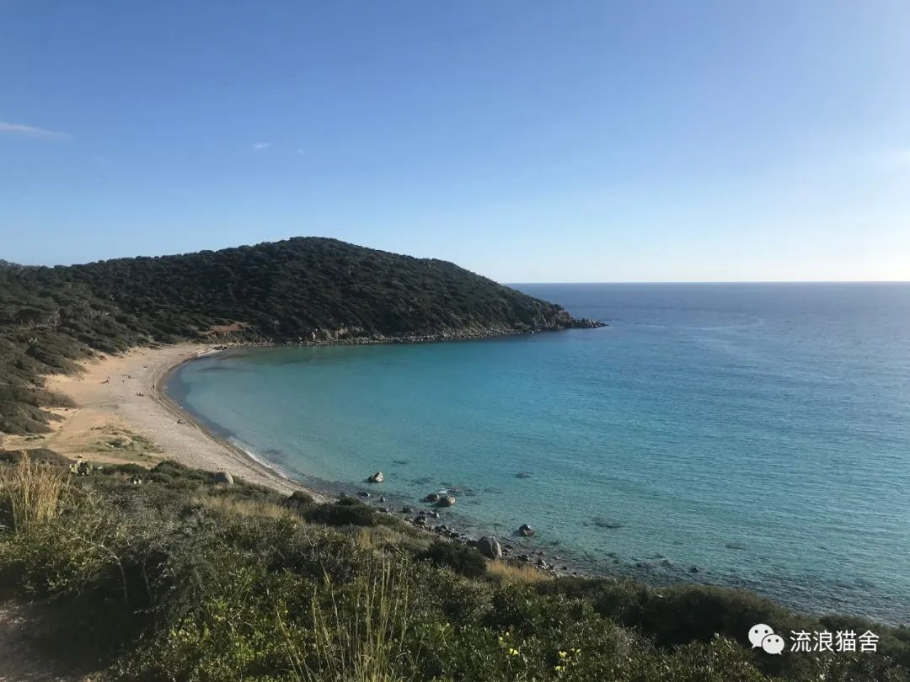
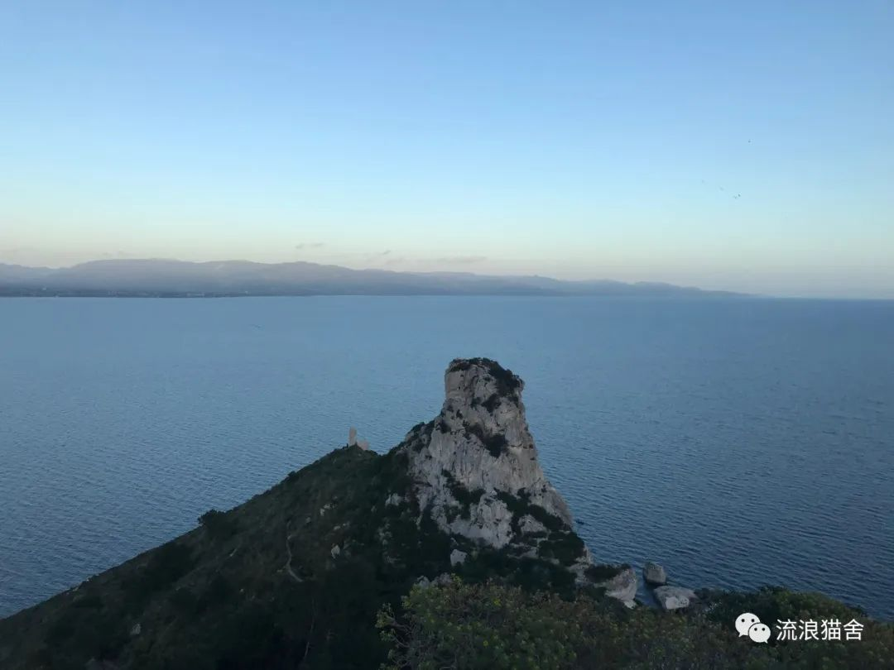
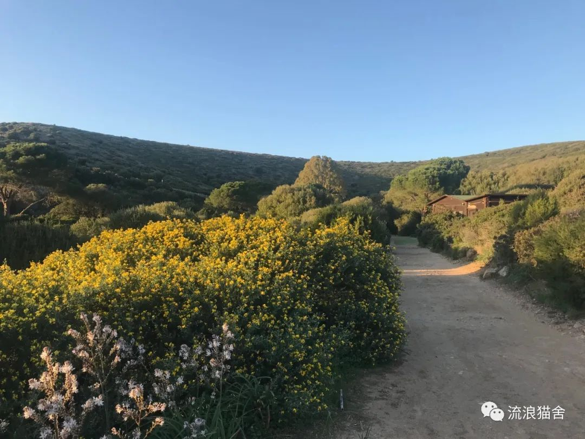
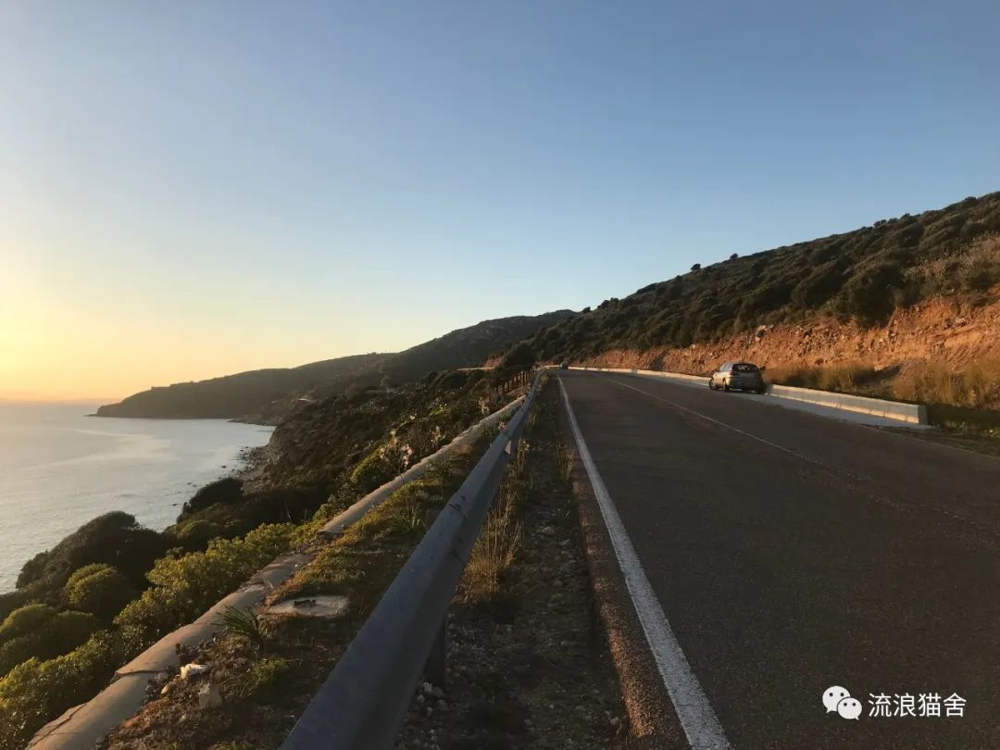
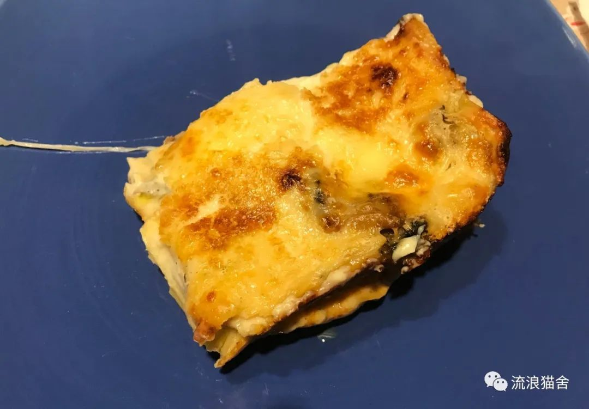
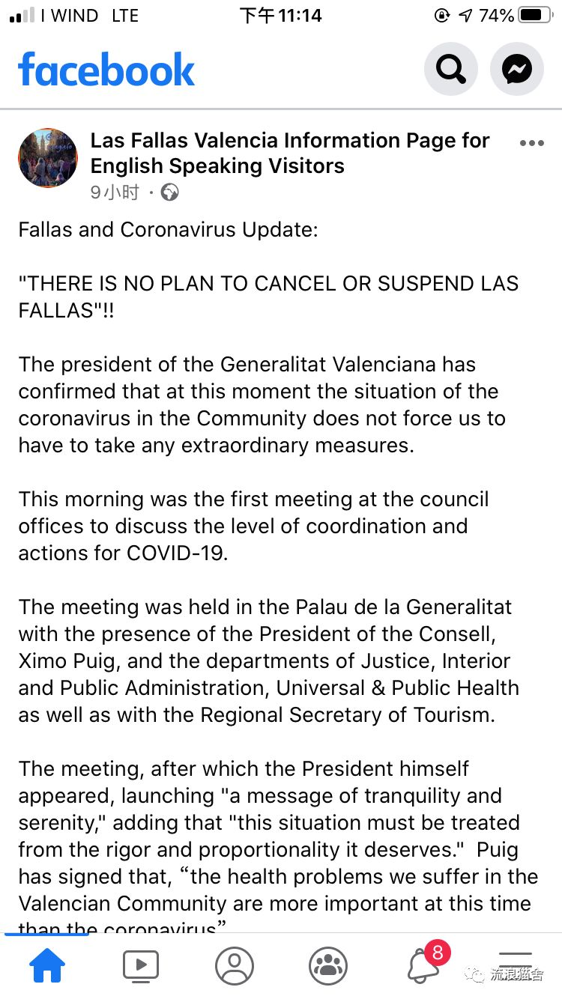
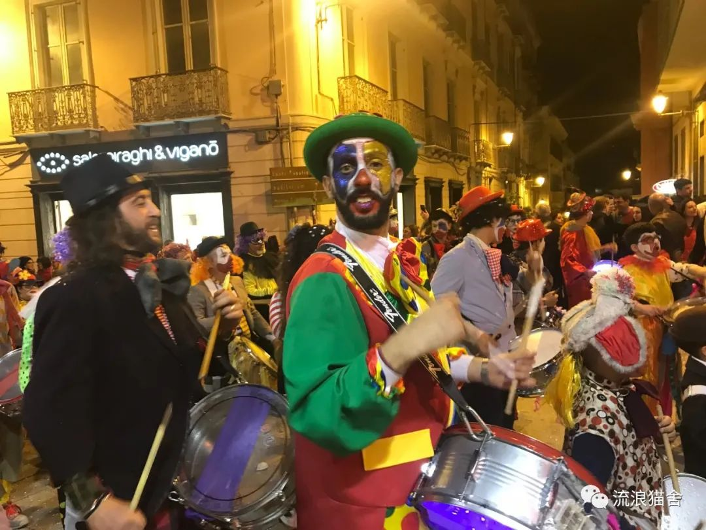

意甲推迟、学校停课、超市抢购，意大利因何成疫情重灾区
原文链接 备份链接 由于确诊病例迅速攀升，意大利成为亚洲国家之外疫情最严重的国家。为了控制病毒的扩散，意大利政府从2月22日起在11个市镇采取了“封城”举措。在被封锁地区，只有持特别通行证者才能出入 2月23日，意大利米兰市中心的大教堂广 …
对于撒丁岛人来说，这是一个平凡的周末。
撒丁岛，地中海的第二大岛屿，典型的地中海气候，夏季炎热干燥，冬季温和，这个冬天尤其温暖少雨。
——1——
周五晚，我约了朋友去吃龙虾，吃到嗨处，抬头一看，餐厅座无虚席，席间一声比一声高。

龙虾
平凡的周五晚上，撒丁岛首府卡利亚里有着平凡的热闹，完全没有意识到此时山雨欲来，病毒即将爆发。
周六花了半天儿的时间醒酒，周五晚的白葡萄酒免费续杯，不知不觉酒喝了不少。
下午两点半，半梦半醒间，我穿好衣服，戴上墨镜，走到市中心的广场，等朋友来接我，一起去海滩。
广场上没有大型建筑物遮挡，完美地暴露在阳光下，我看到已经有人穿着短袖喝啤酒、喝咖啡了。
这些周末平凡的瞬间，我知道，在疫情不乐观的国内，都是奢侈。
等来了朋友，我们开车一路向西，去了卡利亚里附近的小镇Quartu。撒丁岛地形多山，我一个本来不晕车的人，到了撒丁岛先晕公交车、再晕私家车，不止一次，这个地儿磁场不一样吧。
开出卡利亚里，基本一路在山腰上甩来甩去，放眼望去都是绿绿的山，并不陡峭，岩石暴露也不多，也没什么古老的建筑物残骸，风光相当自然。山间公路狭窄，偶尔还能看到骑自行车和骑摩托的，速度非常快，就驾驶交通工具而言，岛民异常生猛。

沿途画风基本是这样
在撒丁岛，阳光真是毫不吝啬。我戴着墨镜，坐在副驾驶，都觉得很难睁开眼睛，我朋友没带墨镜，没放下来遮光板，居然可以开，而且一会进隧道一会出来，我一度怀疑他在闭眼睛开车。
终于，出了一个隧道，他放下来了遮光板，我用英语说，现在我知道你不是在闭眼睛开车了。
翻山越岭开到了一个海滩，没几个人，很安静，海很清澈，沙滩质量一般。这种级别的海滩在撒丁岛我觉得算是日常放风的去处，既不是那种满是遮阳伞的娱乐型海滩，也不是那种风光旖旎的度假胜地。

人很少，海很清
作为一直生活在“大陆”上的我，对海岛人民的日常很少好奇。
我：“你小的时候，怎么跟家人过周末啊，会经常来海边吗？”
朋友：“我家房子附近有个海滩，哦不，是海滩附近有个房子，所以周末来海边还挺多的”
看到没，人家去个海滩真的挺日常的。打个比方，就跟咱们周末下完馆子去购物中心转转一样。
我上周在卡利亚里跟朋友走一个简单的hiking路线，也碰到不少人带着小朋友爬山。对于一直生活在大城市平原的我来说，在卡利亚里，从市中心坐车15分钟，就可以到山脚下，然后爬个30多分钟，就可以在石滩看日落，真的是非常神奇的体验，毕竟从北京大学东门出发，15分钟可能还没到西单呢。在撒丁岛的首府都是这样，可以想像撒丁岛真的是彻头彻尾地拥抱大自然。

这是城市风光
晒了会儿太阳后，我们沿着海边的土路（所以可以想想这个海滩有多原始）走到车里，沿途看着金色的日落，路边的成片野花，静谧而温柔。

原生态的撒丁岛
没有人守候日落，在撒丁，海边日落就像我们每天上班打卡。我好喜欢这种不做作、不惊讶众人的美丽。

野性撒丁岛
又是接近于晕车的回程，我觉得可能是我的酒没有醒利索。
我收拾收拾，很早就睡了，因为第二天要爬山。而此时意大利病毒风暴已经席卷北部了。
——2——
第二天，和另外一位朋友出发，也是开车，先去了iglesias附近。
沿途还是一样的自然，层层的山，偶见羊群。
开到pan di zucchero附近时，天不是很晴朗，所以不是很热，所以我们决定先爬山。

Pan di zucchero
撒丁岛的徒步路线也比较原始，没有规划得很好的路，我穿着登山鞋有的时候都会打滑。但是这样才有探索大自然的乐趣，这几周周末我不是在游山就是在看海，每次在路上时都觉得撒丁岛真是户外爱好者的天堂。
岛民也是热爱自然的，走了几个小山包，在岛民的指导下，我认识了野生橄榄、无花果、鼠尾草，认识了一种汁液有毒的花还有狐狸屎，对于我一个城市长大的孩子来说，这绝对是新知识。
慢慢爬上去时，阳光也穿透云层了。阳光真的是完美的滤镜，在阳光的照射下，海水开始有不一样的颜色。

如果上去都打滑，下来就会更痛苦一些，下到后来，我的双腿都是颤抖的。
下来后，坐在下边一边晒太阳，一边喝可乐，看着躺在地上晒太阳的狗狗，我想，恐怕岛民不明白什么叫“凛冬将至”。
下午，我们移步到沙滩，在沙滩上铺了一张毯子，躺下来晒太阳，右手边远处有一小块延伸到海里的舞台，小舞台上响着欢快的西班牙语歌，一小撮儿人跳着salsa；右后边的人跟我一样躺在沙滩上，左手边的狗子们在沙滩上撒欢儿，围着主人转。此时，意大利感染新冠病毒的人在爆炸式增长，而在这片沙滩上，每个人都在享受当下。

如果在沙滩上的瞬间，是我们生命的永恒底色，恐怕毒品与爱情，就会消失在这世界上了。
——3——
在满屏的抱怨海外华人被歧视的新闻中，我很幸运地遇到了一些善良的岛民。大多数岛民至少没有明显地歧视我，反而在这个节骨眼儿上，朋友请我去他家吃饭。
我去过3个意大利家庭，每个家庭的房子都很大，都很艺术，摆了各种各样的画。
到家后我跟他的家人简单聊几句，鉴于我现在的意大利语水平，想多聊也做不到，他妈妈在烤lasagna，闻着lasagna的香味儿，撸着他家的猫咪，一只大的有点怕生，小的是女儿，完全不怕生，这不，我刚到一个小时就跳到我腿上任我撸了。

原先我觉得意大利人口中“妈妈的味道”是夸张，后来发现真的不是，意大利好吃的菜不在餐厅，在家里，相信我。

Lasagna.
魔幻的是，我们一边吃饭，一边看着新冠病毒的新闻。
更魔幻的是，我朋友在这个节骨眼上发了烧。
我们开玩笑说，你不会是岛上的零号病人吧。
其实是吃坏了东西，所以休息一下就没问题了。
意大利真的像我们传说的那样乐观与无知吗？没有。新闻一直在报，政府对这件事的重视态度跟我们是差不多的。
朋友的妹妹在重灾区威尼托大区读书，帕多瓦附近，晚上跟家人视频，说超市里已经所剩无几了。
面对灾难，人类的反应都是相似的。
不同的是，灾难到来前的反应。
中华民族好像明白什么是居安思危，我们能做到为了避免小概率的悲剧，暂停大概率的快乐。
而在这里不是，刚有病毒风声但是病毒还没到时，中国人就已经疯狂囤货了，而我周围的意大利人还没有想到这一步。岛上的狂欢节依旧继续。在西班牙，3月中下旬在瓦伦西亚的法雅节截止到2月26号也没有取消的意思，而此时，瓦伦西亚大区也有了一个确诊病例。我且理解这个逻辑是，让已经发生的悲剧继续发生，我们享受余下的美好。



划重点：There is no danger, but concern.
前者的逻辑是，一大盘葡萄有几颗坏了，我们先别吃，检查一下哪些葡萄会被影响，处理好了再吃；
后者的逻辑是，新鲜的葡萄还是要第一时间吃啊，烂的就烂着吧，反正肯定会有先烂的。
后者不理解前者，因为等你检查完了，其他的葡萄也不是最好吃的时刻了；
前者不理解后者，因为你不检查，最好发现烂的更多。
我不去评判哪一种是对的，只是对不同文化、不同思想做一个呈现。
周一一早，我们开车回卡利亚里，听着老老的英文歌，岛上阳光暖暖地照在身上，病毒、明天、哪怕是下一分钟都不会在你的脑海里纠缠，撒丁这种世外桃源的气息真的是太令人愉悦了。

这样的阳光、海滩是撒丁岛的正常水平。
到了卡利亚里，作为中国人“未雨绸缪”的思维又迸发出来了，我想要买口罩。
不过我是真的不太敢买，作为中国人，在岛上买口罩，可真是会把岛民吓一跳，因为他们理解的口罩是病人专用，没有预防目的，前一阵子我周围各种意大利人流感的时候也没见到有人戴口罩。我就问了我的意大利朋友要不要买口罩，结果人家肯定地说：不用买！
“有了口罩你有眼镜吗？没有吧，那戴他干嘛呢？”
我竟然无法反驳。
中国人的逻辑是，我们想尽办法填补漏洞，买不到口罩也要自己创造口罩，我命由我不由天；
这里的逻辑是，反正被感染的概率总是会存在的，你担心它也存在，你防护它也存在，概率永远不为零，那担心个什么呢？不如开心地吃吃喝喝。
但是我还是进了药店，我故作淡定地看着各种商品，其实是更想买消毒洗手液。正好有一对老夫妻，用英文问有口罩吗？服务员说卖完了。我也就死心了。
我第二天又去了一个药店，服务员问我需要帮助吗？药店太小了，我说我随便看看就太奇怪了，就说我想看看护手霜，看完护手霜后我又瞅瞅别的货架，消毒洗手液和口罩都没有，看到一款牙膏包装特别独特，我告诉店员妹子太好看了，我要买，妹子还乐颠颠地给我结了帐。
我问了我同事，他们也买不到，所以我觉得这里现在也未必是依然不想戴口罩，只不过真的没有啊……
没有那能怎么办呢？只能乐观喽。
——4——
周二下午，我告诉我的同事我下周不去罗马开会，因为疫情不乐观。同事说，真的不要害怕，死的都是老人，意大利的流感比这个厉害多了。
比起被感染，他们更怕在还没被感染时吓成精神病。
精神的紧张多少会带来身体的不适，这一点在我们的医疗体系下似乎经常被忽视，我们更喜欢见到一个具象的成果，比如治好了还是没治好。我们的逻辑是，紧张起来，为了更好的明天；这里的逻辑是，明天有没有我不知道，但是现在这么紧张你连今天都过不好。
简单说，我们更信任物理防护，这里更认同精神状态对健康的影响大于物理防护。
还有一个不能忽视的实情是，在这里，没法做到国内近乎百分之百的防护，在疏漏太多的情况下，口罩能起的作用就变小了很多，我来简单梳理一下。
首先，如果停工停学，那么，这些不工作也不上学的人有可能会乱跑。你说，向国内一样严防死守不行吗？我觉得不具有操作性，人家一个没有人权政府就歇菜了。而且，大面积停工停学经济也吃不消，经济低迷会造成比病毒传播更严重的后果，毕竟，这里不能勒紧裤腰带过日子。
那如果不停工停学呢？那每个人都会接触到很多人，就拿我的职业说，作为老师，你总不能戴口罩上课吧？你也不知道你的学生接触过谁，那就算你出门戴口罩，被感染的概率也不小。你不戴口罩，至少不会被种族主义者打，至少还有一些当地朋友约你开开心心地玩。
不管怎么说，不对也好，适应当地的习惯，会让你的生活更舒服吧。
周二晚，卡利亚里人民仿佛真的独立于意大利一样，在商业街来了最后一波狂欢节游行。
那条街，是我下班回家的必经之路，国内的朋友们，你们都吓死了吧？
我跟你们说，你们来了你们也不害怕。
因为卡利亚里的气质太有感染力了。
跟里约的狂欢节肯定不能比，这里就是市民自己乐呵乐呵，敲敲鼓唱唱歌，一家老小打扮打扮，很随意地乐翻天。我无法用语言去形容这种不激烈的开心，在感染数字快速增长的周二，我被卡利亚里市民乐天不羁的情绪感染着，回家路上不由自主地加入游行的队伍。（必经之路，不加入也没办法哈哈哈）

卡利亚里狂欢节游行
但我当时真实的情绪时，只有开心，没有焦虑。
我的真实感受是，情绪比病毒传染得更快。
我曾经的认知在松动，对我来说这是一个很好也是一个很值得反思的体验。此刻我的意识里没有跨文化，在这一刻，我本身就都变成了或代表了另外一种文化，这和我本来的文化并不互斥，而是相互体谅。
跟游行队伍随流而下的时候，我开心在当下；但是我也不忘在家多运动，提高免疫力。
周三，同事们之间还在热情贴面；我也和同事随性地下课一起吃了点心、喝了咖啡，我们从来如此，亦不会因为病毒没有了兴致。
可是这是盲目乐观吗？也不是。同事觉得，病毒迟早会到岛上来。我现在也这样觉得。
——5——
最后，我上个价值。
国内早已经云聚会了，但是，我的学生还在热烈地讨论我们在哪里聚餐，我的朋友还要跟我约饭。
一直以来，我们的评判体系是以活着为目的，而我现在惊奇地发现，道家古老的智慧“生死有命”在2000年多后的今天，跟岛民有了共鸣。这不是不怕死，而是对死亡有一种宿命一般的认识。
在这个重大卫生事件中，我感受到了前所未有的跨文化冲突。
从表象层面的戴不戴口罩，到精神层面的对未来的态度和对生命价值的理解。
一直以来，指责对方的声音大过听对方想法的声音，我们都太习惯于自己的认知是对的。
或许我们的处理方式是对的。可是，现在又有多少人会百分之百肯定病毒来自于野味呢？
科技在变、认知在变，但是需要倾听、需要共情的能力是不变的。
从前我们没有意识到政治正确中“不歧视”的重要性，但终于有一天歧视临头时，我们发现，“政治正确”是弱者的防护服，而这个世界上，不会有永远的强者。
曾经有不少意大利人因为病毒歧视中国人，曾经意大利北部经常开南部的地图炮，现在意大利北部成了重灾区，现世轮回上演。
不沦落，你永远不知道被歧视的滋味。
2020无法重新开年，但希望，病毒销声匿迹的某一天，我们中国人还记得曾经被歧视的今天，对世界其他遭受灾难的地方报以同情，也希望我现在正在生活的意大利会记得这一年初，病毒不会属于某一个民族，他是全人类的老对手。
今天，周五，我也鼓起勇气，去药店问，有口罩吗？
当然是没有的，但是也没看到店员的恐慌，写着写着，我觉得，我们都在“进化”。
——结尾——
来自意大利朋友消息： Ci vediamo questo fine settimana prima di morire tutti di coronavirus?

作者简介：
现在意大利撒丁岛工作，
（喜欢被）人称岛主，
曾在荷兰、西班牙、国内工作，
（即将）被意大利人改造成精神南欧人。
原文链接 备份链接 由于确诊病例迅速攀升，意大利成为亚洲国家之外疫情最严重的国家。为了控制病毒的扩散，意大利政府从2月22日起在11个市镇采取了“封城”举措。在被封锁地区，只有持特别通行证者才能出入 2月23日，意大利米兰市中心的大教堂广 …
原文链接 备份链接 距新型冠状肺炎疫情公开已经过去二十多天了，从最初的混乱和恐慌至今，人们似乎在一点点变得平静。生活的节奏被打乱，取而代之的是对 “非正常状态” 的逐渐习惯。对很多参与在捐助行动里的人也是，紧张感从没消失，只是变得可以适 …
原文链接 备份链接 童言是生活在新加坡的三明治专栏作者。自1月23日确诊第一例“新型冠状病毒肺炎”病例以来，目前新加坡已确诊18个病例，在海外确诊数据中排名第三，仅次于日本、泰国。 这场“肺炎”疫情牵动着许多在海外中国人的心绪。华人群体 …
原文链接 备份链接 本文由娱志The Review原创出品 华东师范大学传播学院学生娱评号 转载需申请授权 作者 | Moe，苏博 编辑 | 华实 导语 “自2020年1月23日10时起，全市城市公交、地铁、轮渡、长途客运暂停运营；无特殊 …
原文链接 备份链接 于这座小城，我只是一个过客。 身为油腻的中年妇女，重新捡起英语的惨烈真是一言难尽。走过考试的壮烈，而今硬着头皮翻译自己的著作和论文。好在就此让娃提炼出：只要坚持，就一定能够把事情做成。他们时常用这句话来解释各种事情，也 …